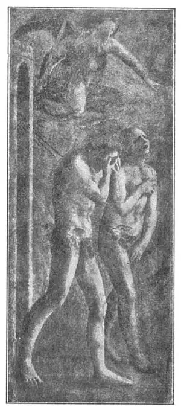

09
BORN AGAIN PAINTERS
再生的画家

THE old Egyptians believed they would come to life again in a thousand years perhaps, after they had died, but they never did. The old Greeks didn’t think much about coming to life again, but about two thousand years after the old. Greek artists had died, people were born in Italy who in many ways were like those old Greeks. Indeed, these Italians were so like the old Greeks that it seemed almost as if the old Greeks had been born again, and were living once more— not in Greece, but in Italy. So we call this time the Born Again time, or by the long name Renaissance, which means Born Again.

No.9 ADAM AND EVE DRIVEN（《逐出乐园》），FROM EDEN MASACCIO（马萨丘 作）
Courtesy of The University Prints
One of the first artists of the Born Again time was a boy who had a very insulting nickname. Now, nicknames stick to some people when they grow up. But it seems strange that this boy, who became a great painter, was always called by his insulting nickname. To this very day we know him by the name Masaccio (Ma-zat’cho). That may not sound very insulting because it’s Italian, but it means “Dirty Tom.”
Masaccio was a very poor boy—perhaps that is why he was dirty— and he died young. When he died he was still very poor and still very dirty. No one seemed to like him or his painting while he lived and some people even say he was poisoned by his enemies. But after he died, people thought differently about him. Great artists thought his paintings so good that they went to the place where they could be seen, to study and copy them.
The reason other artists studied and copied his pictures is that Masaccio had found out how to do something that no artist before him had been able to do. Masaccio’s pictures did not look flat. He painted pictures so that you could see back into them. Perspective, you remember, we call it.
For thousands of years artists had tried to get perspective, but they had not succeeded very well. So the Renaissance artists wanted to find out how Masaccio got perspective. One of his famous frescoes was a picture of the angel driving Adam and Eve out of the Garden of Eden.
One of these painters who studied Masaccio’s frescoes was a monk named Fra Filippo Lippi—that is, Brother Filippo, which means Philip though it is spelled with an F instead of Ph . Brother Filippo was, however, not a good and holy monk like that religious painter, Brother Angelico. Brother Filippo was a good painter, but a Bad Brother. It is said that he was bored with being good and with being a monk, so he ran away from his monastery. After many wild adventures, he was captured by pirates and made a slave. One day he drew with a piece of charcoal a picture of his master and the likeness was so good that his master set him free.
Brother Filippo made his way back to Italy and was hired to paint a picture of the Madonna for a convent. A convent is a building where women called nuns live. Nuns have given up their lives to religion and they live together as monks do in a monastery.
One of the nuns in this convent, a beautiful young girl, posed as the model for Filippo’s painting of the Virgin. Now, neither a monk nor a nun is supposed to fall in love with any one, but, in spite of what he was supposed not to do, Filippo made love to the nun and, in spite of everything, they ran away together. They had a son whom they named Filippino which means “Little Filippo.” Filippino became a great painter, too, even greater than his father.
Another artist of this time has a name—or rather two names—I like to say because each name has “ozzo” in it, a kind of rhyme. It is Benozzo Gozzoli (Ben-ot’zo Gotz’olē).
In the city of Pisa is a peculiar tower that does not stand straight, but leans to one side. In the same city is another peculiar thing. It is a cemetery. The peculiar thing about this cemetery is that the ground for it was brought all the way from Jerusalem so that the earth in which people were buried would be especially holy—the same ground that Christ had trod. It took fifty-three ship-loads of this holy earth to make the cemetery. It is called the Campo Santo, which means Holy Field.
Around the Campo Santo is a wall and on the inside of this wall Benozzo Gozzoli painted scenes from the Old Testament—the story of Noah, the Tower of Babel, David, Solomon, and so on—twenty-two of them. There were crowds of people in each picture and often buildings in the back of the picture (the back ground , we call it).
In most of the pictures which Benozzo Gozzoli painted, as well as in those of other painters of this time, the clothing of the people was not the kind of clothing the people of Bible times wore. And the buildings in the background were not those of Bible times or Bible places at all. The artists had not visited Bible lands and didn’t know what kind of clothes the Bible people wore or what kind of buildings they built, so they made the clothes and buildings like the Italian clothes and buildings of their own time.
So here are three painters to begin the Born Again time, the early Renaissance, the hundred years from 1400 to 1500. These three painters may not seem to you much like old Greeks born again, but be sure to remember them—Dirty Tom, the Bad Brother, and the Cemetery Painter, who lived and worked just before Columbus discovered America.
【中文阅读】
古埃及人相信，人死后一千年可能会复活，但实际上从没有人复活过。古希腊人对复活这档子事却不屑一顾，但在古希腊画家死后大约两千年时，意大利出生了一批人，他们在许多方面都与古希腊人非常相似。这批意大利人的确很像古希腊人，以至于他们看起来简直就像古希腊人再生，只不过他们不住在希腊，而住在意大利罢了。因此，我们把这个时期称为“再生时期”，或者称为“文艺复兴时期”，意思是“再生”。
再生时期的早期画家中有一个小伙子，他有一个很难听的绰号。的确有些人的绰号会伴随一生。但奇怪的是这个小伙子后来成了伟大的画家，人们又总是用那个难听的绰号来叫他。直到今天我们只知道他叫马萨丘。在意大利语中，这名字可能并不那么难听，但意思却是“脏兮兮的汤姆”。
马萨丘是个贫穷的小伙子——也许这就是他脏兮兮的原因——而且他英年早逝。他去世的时候，仍很贫穷，还是脏兮兮的。他活着的时候，似乎没人喜欢他和他的画。有人甚至说他是被反对他的人毒死的。但在他死后，人们改变了对他的看法。许多大画家都认为他画得很棒，他们甚至到存放他画的地方观摩学习并临摹他的画。
画家们之所以学习并临摹马萨丘的画作，原因是他成功地做到了以往画家没法做到的一些事。比如，马萨丘的画看起来带有层次感，可以直接看见画面的后部。请记住，我们把这种效果叫做透视。
过去几千年来，画家们尝试画出透视效果，但他们并不怎么成功。所以文艺复兴时期的画家们就想弄清楚马萨丘是怎么做到的。他最有名的一幅湿壁画，画的是天使正在把亚当和夏娃赶出伊甸园。
研究马萨丘湿壁画的画家中有一个名叫弗拉•菲利波•李比的修士——也就是菲利波弟兄，意思是菲利普，只是不读“菲利普”，而读“菲利波”。然而，菲利波弟兄并不像虔诚画家安哲利科弟兄那样善良圣洁。菲利波弟兄是一位优秀的画家，却不是一个好修士。据说，他厌倦了修士和行善的生活，从修道院逃走了。在经历许多冒险后，他被海盗俘获当了奴隶。有一天，他用木炭给主人画了一张画像。因为画得非常像，主人就把他释放了。
菲利波弟兄回到意大利，被一所女修院聘请画一幅圣母玛利亚的画像。女修院 是修女们生活的地方。修女们献身于宗教，她们像修道院的修士们一样也过着集体生活。
这个女修院有个年轻漂亮的修女，做了菲利波画圣母像的模特。虽然修士和修女不允许相爱，但菲利波还是向那个修女表达了爱意，他们终于不顾一切地私奔了。他们生了一个儿子，取名菲利比诺，意思是“小菲利波”。菲利比诺也成了一位伟大的画家，比他父亲还要出名。
这个时期还有一位画家，他的名字或他的两个名字——因为我想说，他两个名字里都含有“佐”这种韵律。他就是贝诺佐·戈佐利。
比萨城有一座奇特的塔，塔身不是直立的，而是向一边倾斜。在这城里，还有另外一个奇特的事物——一块墓地。那墓地的奇特之处在于墓地的土都是从耶路撒冷运来的，所以人们下葬的这块地便尤为神圣——基督曾踏过的圣土。当时建成这块墓地用了五十三船圣土。这块墓地就叫做坎波桑，意思是“圣陵”。
坎波桑周围有一堵墙，戈佐利在墙的内壁上了画了许多《圣经•旧约》中的场景和故事——诺亚方舟、巴比塔、大卫和所罗门的故事，等等。——一共二十二幅画。每幅画中都有人群，而人群后面又都有房屋（我们称作背景）。
在戈佐利和同时代其他画家的大部分画作中，人的着装并不是《圣经》时代人的着装。背景中的房屋也不是《圣经》时代的房屋或根本就不是《圣经》中的所指之处。画家们并没有去过《圣经》里所讲述的地方，也不知道《圣经》时代的人们穿什么样的衣服或盖什么样的房子，所以他们只能仿照他们自己时代意大利人的穿着和建筑。
这三位画家开启了再生时代，也就是文艺复兴初期，从1400年到1500年的百年间。可能在你看来，这三位画家并不是古希腊人的再生，但你务必要记住他们——脏兮兮的汤姆、不良修士和墓地画家，他们生活并创作于哥伦布发现美洲大陆之前的时期。